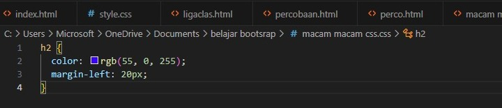
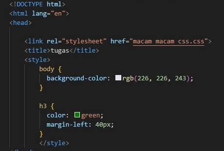

1. Inline CSS
Tipe yang pertama adalah Inline CSS. Seperti namanya, kode CSS ini langsung ditempatkan di dalam baris
kode HTML. Contohnya adalah seperti ini:
2.External CSS bisa mempengaruhi keseluruhan website. Tentunya hal ini dilakukan dengan mengubah file CSS, tanpa perlu menuliskan kode secara berulang.

3.Tipe yang terakhir adalah Internal CSS. Kurang lebih, tipe yang satu ini mirip dengan Inline CSS. Namun, kodenya tidak dituliskan di baris yang sama.
